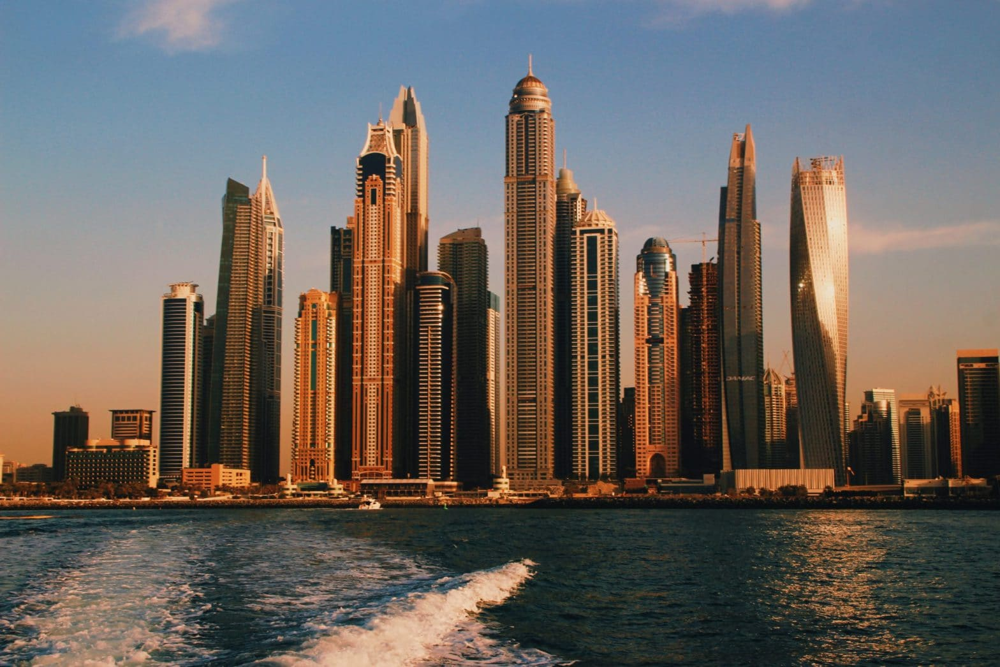
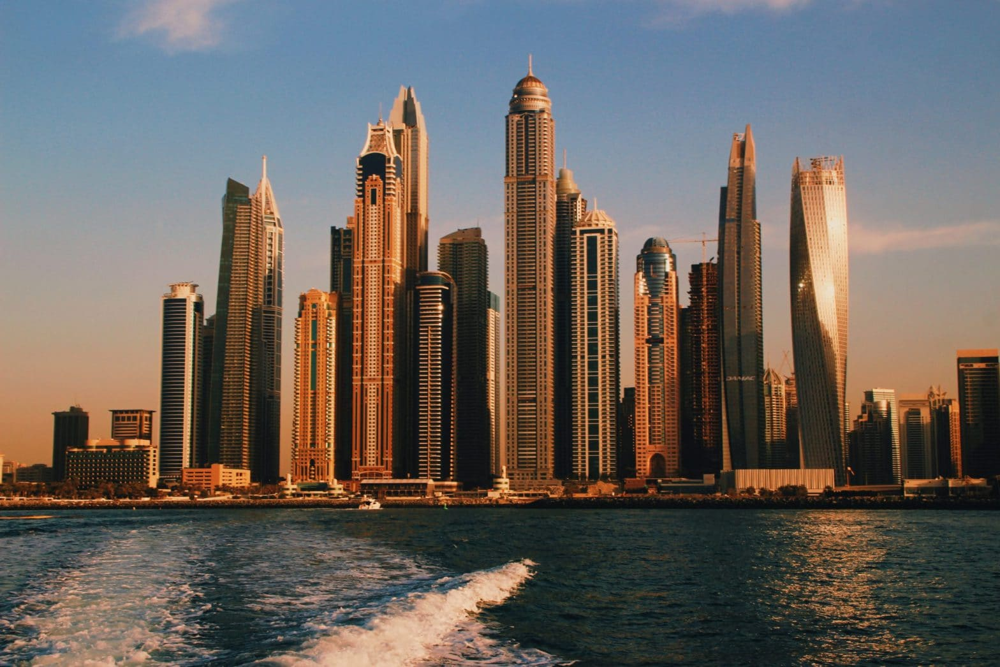

Ville de Dubaï
Dubaï est l'une des sept émirats des Émirats arabes unis (EAU) et est connue pour son architecture moderne, ses centres commerciaux luxueux, ses plages de sable fin et ses attractions touristiques.
Située sur la côte sud-est du golfe Persique, Dubaï est devenue une destination touristique majeure, attirant des millions de visiteurs du monde entier chaque année.
 
